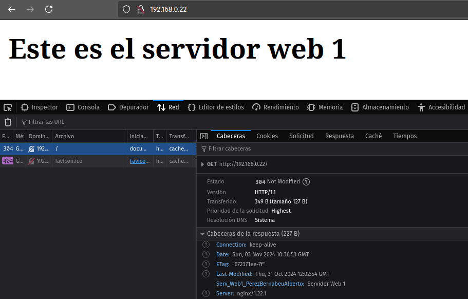
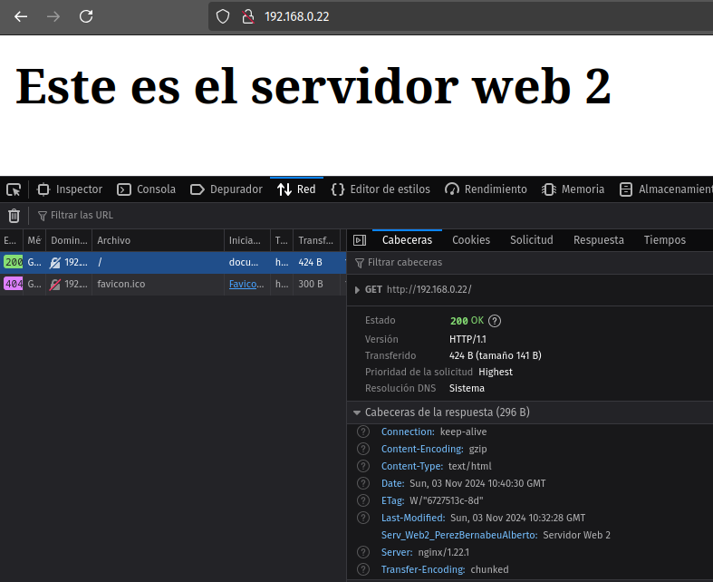

Práctica 2-4. Balanceo de carga
Para realizar esta tarea es necesario clonar la MV que funciona como servidor web. De esta manera, tendremos dos servidores web y un servidor que funciona como proxy inverso y balanceador de carga.
Un recordatorio de las IPs que se están utilizando en cada máquina:
- Anfitriona: 192.168.0.13
- Servidor web 1: 192.168.0.20
- Servidor web 2: 192.168.0.21
- Servidor proxy: 192.168.0.22
Configuración del primer servidor web
Será necesario cambiar el nombre del directorio que contiene los archivos del servidor web a webserver1. Lo mismo con el archivo de configuración y con el enlace simbólico, en los directorios /etc/nginx/sites-available y /etc/nginx/sites-enabled.
Además, se le añade una cabecera al archivo de configuración. En mi caso:
location /{
add-header Serv_Web1_PerezBernabeuAlberto "Servidor Web 1";
}
También he modificado el contenido del HTML del servidor, para que muestre:
<html>
<head>
<title> Prueba de balanceo con NGINX</title>
</head>
<body>
<h2>Este es el servidor web 1</h2>
</body>
</html>
Configuración del segundo servidor web
La configuración del segundo servidor es la misma que la del primer servidor web, cambiando "webserver1" por "webserver2" en los lugares que es necesario.
Configuración del servidor proxy inverso
En el servidor proxy inverso, para configurar el balanceo de carga, modificamos el archivo de configuración de /etc/nginx/sites-available/ de la siguiente manera:
upstream backend_hosts {
random;
server 192.168.0.20:8080;
server 192.168.0.21:8080;
}
server {
listen 80;
listen [::]:80;
server_name webserver www.webserver.com;
location / {
proxy_pass http://backend_hosts;
# add_header Host proxy_inverso_albertoperez;
}
}
Así, cuando desde la máquina anfitriona busquemos 192.168.0.22:80 (o la IP correspondiente al servidor o el nombre que le hayamos dado desde el archivo /etc/hosts de la anfitriona) recibiremos realmente el contenido de uno de los servidores web, en este caso, aleatoriamente.


Podemos observar que en ambos casos, efectivamente, se ha buscado la IP del servidor proxy, pero en un caso se ha devuelto el contenido del servidor web 1 y su cabecera correspondiente y en el otro caso se ha devuelto el contenido del servidor web 2 y su cabecera correspondiente.
Si paramos el servicio de Nginx en uno de los servidores web, sólo se mostrará el contenido del otro servidor. Lo mismo ocurrirá si por una causa ajena uno de los servidores web cae o es inutilizado.
Apunte sobre solución de problemas
Al trabajar con varias máquinas al mismo tiempo, hay que tener en cuenta que existen muchos errores que pueden ocurrir y es necesario saber cómo diagnosticar qué está fallando cuando no obtememos el resultado que esperamos.
En mi caso, a mitad de realizar esta práctica, tenía configurados correctamente los servidores web y el servidor proxy, pero al acceder a la IP de éste desde el navegador de mi máquina anfitriona, no accedía al contenido. La manera de proceder para diagnosticar el problema fue el siguiente:
-
Comprobar que existe comunicación entre los servidores web y el proxy inverso
Para ello, podemos utilizar curl y ping desde el proxy:
En mi caso particular, con ping comprobé que existía comunicación entre las máquinas, pero curl no devolvía correctamente el servicio alojado en los puertos de los servidores web.curl 192.168.0.20:8080 curl 192.168.0.21:8080 ping 192.168.0.20 ping 192.168.0.21 -
Comprobar que existe una regla de cortafuegos para los puertos :8080 en los servidores web
Para ello, podemos utilizar la herramienta ufw:
En mi caso no existía la regla para permitir la comunicación por los puertos :8080 de los servidores web. Una vez creadas las reglas en cada servidor web, pude terminar la práctica correctamente.sudo ufw status # Muestra las reglas existentes sudo ufw allow 8080/tcp # Crear la regla si no existe para que se permita la comunicación por el puerto :8080 -
Comprobar las configuraciones de cada servidor
Una vez hechas las comprobaciones pertinentes sobre las conexiones de los servidores, si existe algún problema, es bastante probable que estos se encuentren en los archivos de configuración de /etc/nginx/sites-available de alguno de los servidores. Podemos obtener indicaciones valiosas desde Nginx ejecutando:sudo nginx -t
Cuestiones finales
1. Busca información de qué otros métodos de balanceo se pueden aplicar con Nginx y describe al menos 3 de ellos.
Otros métodos de balanceo que permite Nginx son:
-
least_conn: el proxy enviará las solicitudes entrantes al servidor que tenga un menor número de conexiones activas en ese momento, para evitar las eventuales sobrecargas.
-
ip_hash: se asigna cada solicitud a un servidor en función del hash de la dirección del cliente, de manera que todas las solicitudes de un mismo cliente serán dirigidas siempre al mismo servidor. En caso de que caiga el servidor, se enviará la petición al siguiente servidor en el grupo.
-
least_time: la petición será enviada al servidor con menor latencia y menor cantidad de conexiones activas, es decir, el que ofrezca un menor tiempo de espera para la respuesta.
2. Si quiero añadir 2 servidores web más al balanceo de carga, describe detalladamente qué configuración habría que añadir y dónde.
Considerando que tuvieramos dos nuevos servidores con configuraciones correctas (contenido correcto y con permisos adecuados en /var/www, archivos de configuración en /etc/nginx/sites-available correctos y Nginx funcionando correctamente y sin problemas con los permisos del cortafuegos), sólo sería necesario indicar las IPs y puertos de los servidores en el archivo de configuración del proxy. Por ejemplo:
upstream backend_hosts {
server 192.168.0.20:8080;
server 192.168.0.21:8080;
server 192.168.0.23:8080; # Nuevo servidor
server 192.168.0.24:8080; # Nuevo servidor
}
En caso de error, sería necesario realizar las comprobaciones oportunas en los nuevos servidores web (que Nginx funcione correctamente en ellos y que exista conexión estable entre estos y el proxy)